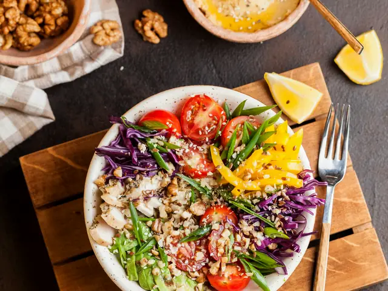
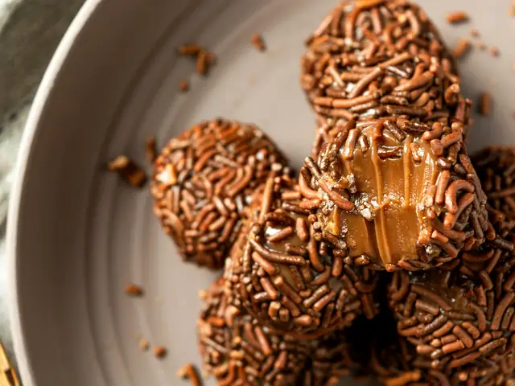

Slate & Saffron
Recipes
Drinks
My Fridge
Saved
5 recipes
South American Cuisine
Corn, beans and Andean grains
Cheese Arepas
Venezuela · 30 min · Medium
Cheese Corn Empanadas
Argentina · 60 min · Medium · Vegetarian version

Andean Quinoa Salad
Peru · 25 min · Easy
Veg Feijoada
Brazil · 60 min · Medium · Vegetarian version

Brigadeiro
Brazil · 25 min · Easy